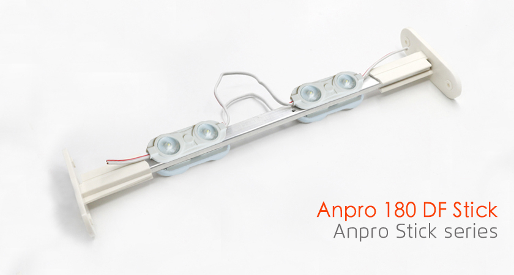
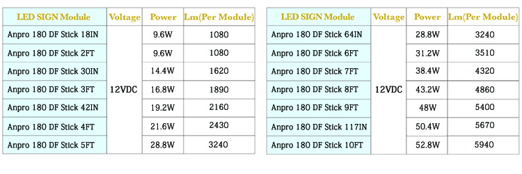

<div class="product-details margit-top110">
	<div class="container">
		<div>
			
		</div>
		<div class="row bottom-line">
			<div class="col-xs-12 col-sm-7 col-md-7">
				<p>
					With the brightest and most even illumination available today, G2G's AnPro Sticks are
 the most innovative design in replacing fluorescent tubes in sign cabinets and integrating
 high quality signs that produce less energy, lower maintenance expenses and shine brighter 
than ever before.
				</p>
			</div>
			<div class="col-xs-12 col-sm-5 col-md-5">
				<a class="download_layout" href="download_files/G2G_Module_Catalog.pdf" target="_blank">Download The Product Catalog</a>
			</div>
		</div>
		<div class="row product-features">
			<h3 class="specification">LED MODULE FEATURES</h3>
			<p>
                      • Double-faced sign cabinets
				<br> • 12 VDC Constant Current Technology (CCT)
				<br> • IP 67 wet-location
				<br> • UL and cUL Recognized
			</p>

		</div>

		<h3 class="specification">LED MODULE SPECIFICATIONS</h3>
		<div>
			
		</div>
		<h3 class="specification">LED MODULE DIMENSIONS</h3>
		<div>
			
		</div>

	</div>
</div>